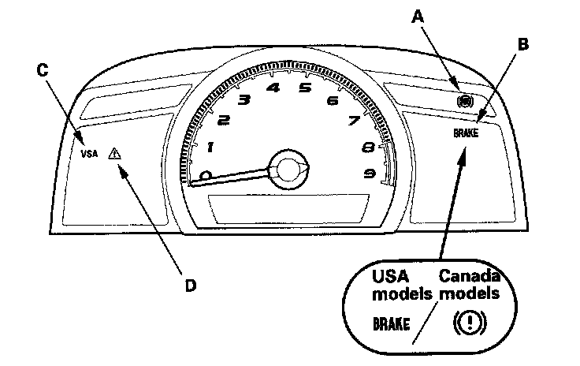

General Troubleshooting Information
General Troubleshooting InformationSystem Indicator
This system has four indicators:
^ ABS indicator (A)
^ Brake system indicator (B)
^ VSA indicator (C)
^ VSA activation indicator (D)

When the system is OK, each indicator comes on for about 2 seconds after turning the ignition switch ON (II), then goes off.
When the system detects a problem, a DTC will be set and, depending upon the failure, the VSA modulator-control unit will determine which indicator(s) will be turned on. If the problem goes away (system returns to normal), the indicator(s) will be controlled in the following way depending upon the DTC that was set:
^ The indicator(s) will come on and stay on when the ignition switch is ON (II).
^ The indicator(s) will automatically go off.
^ The indicator(s) will go off after the vehicle is driven.
ABS Indicator
The ABS indicator comes on when the ABS function is lost. The brakes still work like a conventional system.
Brake System Indicator
The brake system indicator comes on when the EBD function is lost, the parking brake is applied, and/or the brake fluid level is low.
NOTE: If two or more wheel sensors fail, the brake system indicator will come on.
VSA Indicator
The VSA indicator comes on when the VSA function is lost.
VSA Activation Indicator
The VSA activation indicator blinks when the VSA function is activating. The VSA activation indicator comes on, when the VSA is off, or the VSA function is lost.
Diagnostic Trouble Code (DTC)
^ The memory can hold all DTCs. However, when the same DTC is detected more than once, the more recent DTC is written over the earlier one. Therefore, when the same problem is detected repeatedly, it is memorized as a single DTC.
^ The DTCs are indicated in the order they occur.
^ The DTCs are memorized in the EEPROM. Therefore, the memorized DTCs cannot be canceled by disconnecting the battery. Do the specified procedures to clear the DTCs.
Self-diagnosis
^ Self-diagnosis can be classified into two categories:
- Initial diagnosis: Done right after the ignition switch is turned ON (II) and until the ABS and VSA indicators go off.
- Regular diagnosis: Done right after the initial diagnosis until the ignition switch is turned OFF.
^ When the system detects a problem, the VSA modulator-control unit shifts to fail-safe mode.
Kickback
The pump motor operates when the VSA modulator control unit is functioning, and the fluid in the reservoir is forced out to the master cylinder, causing kickback at the brake pedal.
Pump Motor
^ The pump motor operates when the VSA modulator-control unit is functioning.
^ The VSA modulator-control unit checks the pump motor operation during regular diagnosis when the vehicle is driven over 10 mph (15 km/h) the first time after the ignition switch is turned ON (II). You may hear the motor operate at this time, but it is normal.
Brake Fluid Replacement/Air Bleeding
Brake fluid replacement and air bleeding procedures are identical to the procedures used on vehicles without VSA system.